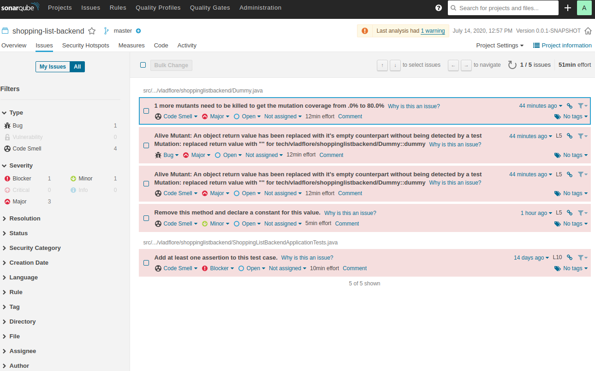

Pet Project (2/)
This is part 2 of the Pet Project series about building a small web application from scratch.
Project posts:
As stated in the final words section of the part 1 post, there are still some technical points I want to address, before starting with the actual implementation: hooking up the project to a SonarQube Server and define a set of quality constraints for it.
Let’s start with hooking up the backend component to the SonarQube. I will be using the SonarQube instance I installed and configured in a previous post. The post SonarQube on EC2 explains the steps required to get yourself a running instance of SonarQube. In case you do not want to deal with AWS, you can as easily install SonarQube locally on your own working machine, be it physical or virtual.
Having the infrastructure up and running let us now update the backend component with respect to the quality constraints, and by this I mean enabling code coverage, mutation testing, setting some code coverage metric constraints and making the reports available in SonarQube.
Enabling code coverage
For this I will be using Maven JaCoCo Plug-in. Add jacoco-maven-plugin to the <build><plugins>...</plugins></build>
section of your pom.xml file, as illustrated below.
<plugin>
<groupId>org.jacoco</groupId>
<artifactId>jacoco-maven-plugin</artifactId>
<version>0.8.5</version>
<executions>
<execution>
<goals>
<goal>prepare-agent</goal>
</goals>
</execution>
<execution>
<id>report</id>
<phase>prepare-package</phase>
<goals>
<goal>report</goal>
</goals>
</execution>
</executions>
</plugin>Now do a mvn clean verify and observe that unter /target we now have a file called jacoco.exec and another folder /site/jacoco.
The file can be interpreted by other applications, like Sonar, IntelliJ, or by plugins.
The folder contains the code coverage report in multiple formats - HTML, XML and CSV.
Adding code coverage metrics constraints
Adding constraints for some code coverage metrics requires configuring the jacoco plugin as below (put the block inside the <plugin></plugin> tags):
<configuration>
<rules>
<rule>
<element>BUNDLE</element>
<limits>
<limit>
<counter>INSTRUCTION</counter>
<value>COVEREDRATIO</value>
<minimum>0.90</minimum>
</limit>
<limit>
<counter>CLASS</counter>
<value>MISSEDCOUNT</value>
<maximum>0</maximum>
</limit>
</limits>
</rule>
<rule>
<element>CLASS</element>
<excludes>
<exclude>*Test</exclude>
</excludes>
<limits>
<limit>
<counter>LINE</counter>
<value>COVEREDRATIO</value>
<minimum>90%</minimum>
</limit>
</limits>
</rule>
</rules>
</configuration>In this case I say that I want a minimum instruction coverage ratio of 90% for the whole application, our backend, no classes should be omitted, and at the class level I want a minimum line coverage ratio of 90%, but not for the test classes.
Failing to meet these conditions will result in a build fail.
Check code coverage metrics documentation page for more details.
Adding mutation testing
The Pitest system provides mutation testing in the Java world and can be added to a Maven project by including the pitest maven plugin and configure it accordingly.
At a minimum we need to add the following to the <plugins> block:
<plugin>
<groupId>org.pitest</groupId>
<artifactId>pitest-maven</artifactId>
<version>1.5.2</version>
<configuration>
<outputFormats>
<!--
XML for sonar and HTML to keep it as default
which would have been ignored if we had added only the XML
-->
<outputFormat>XML</outputFormat>
<outputFormat>HTML</outputFormat>
</outputFormats>
</configuration>
<executions>
<execution>
<phase>test</phase>
<goals>
<goal>mutationCoverage</goal>
</goals>
</execution>
</executions>
<dependencies>
<dependency>
<groupId>org.pitest</groupId>
<artifactId>pitest-junit5-plugin</artifactId>
<version>0.12</version>
</dependency>
</dependencies>
</plugin>This will bind the goal org.pitest:pitest-maven:mutationCoverage to the test phase,
which means it will run whenever the test phase runs, such as by mvn clean verify.
NOTE 1: bear in mind that mutation testing can slow your unit tests, so you might want to separate them from the other tests. Without further configuring the plugin all your tests will be mutated, which could lead to longer than expected test execution time. Something similar should be done for the integration tests too. I will address all of this in the following posts, as the project progresses.
NOTE 2: I had to add some dummy logic to the project to avoid pitest from failing when it does not find any code to mutate, other than the code scaffolding done by Spring Boot CLI when generating a new Spring Boot project. Check this link for more on this matter.
Before continuing with the next point, make sure your SonarQube instance is running and configured correctly regarding mutation testing. Check Configure SonarQube section of this post for some guidance.
Push the code analysis to SonarQube
We first have to add the sonar-maven-plugin to the pom file, as illustrated below:
<plugin>
<groupId>org.sonarsource.scanner.maven</groupId>
<artifactId>sonar-maven-plugin</artifactId>
<version>3.7.0.1746</version>
</plugin>Run the following command (change the Sonar host URL accordingly):
mvn clean verify sonar:sonar -Dsonar.host.url=http://<IP-Address>:9000
This should be it! Check the state of the project containing the changes mentioned above and have a look at the screen below to see how the project looks on SonarQube.

Final words
In this post we hooked up our backend project to SonarQube (I am using an instance on AWS EC2), enabled code coverage, added some code coverage constraints and mutation testing. This is more of a minimalistic configuration, feel free to explore more and make changes as you see fit for your project.
Next, we will finally start writing some code to implement the first iteration of the project, as stated in part 1 of this series.